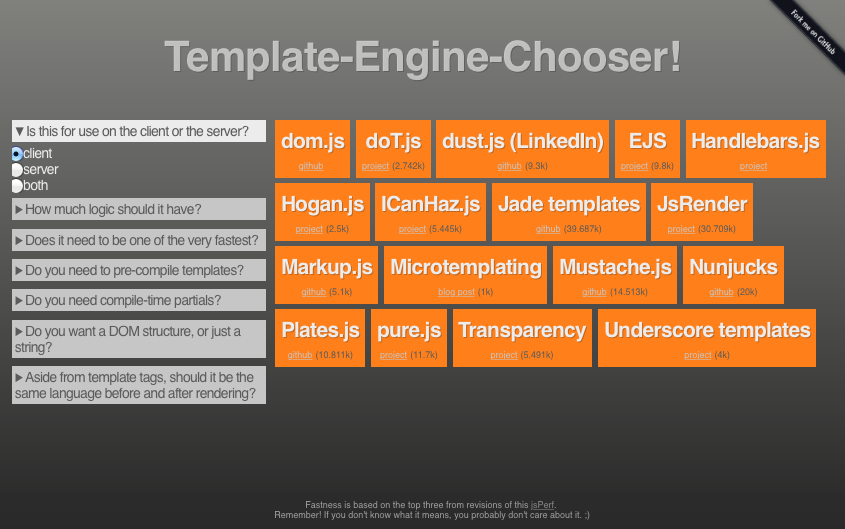
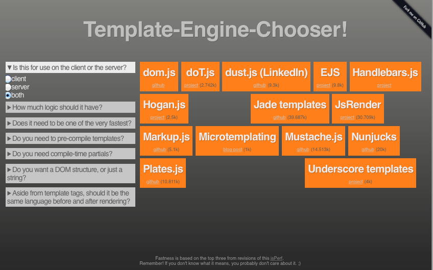

Welcome!
DISCLAIMER: this presentation may contain strongly opinionated views, philosophical tech-rants, very little science and possibly traces of nuts.
Isomorphic Templating
template |ˈtɛmpleɪt, -plɪt|
a shaped piece of rigid material used as a pattern for processes such as cutting out, shaping, or drilling.

In ur strz, interpolejtin!
name = 'Zoidberg'
Hello ${name}!
=> 'Hello Zoidberg!'
Dynamic Server Pages

Templating v1.0

ASP, JSP, PHP
Hello <%= name %>!
Hello <%= name %>!
<p> Hello <?= $name ?>!</p>
Can haz moar puwr!

Templating v1.9
$('#greeting').append('Hello' + name + '
');
Bad idea

Templating v2.0
Templating v3.0!
Example
Server- and client-side templating with Spring MVC and Mustache.
Dependencies
com.github.sps.mustache
mustache-spring-view
1.3
com.samskivert
jmustache
1.9
Project layout
src/main
├── java
│ └── ...
└── webapp
├── WEB-INF/
├── assets
│ ├── jquery/
│ ├── mustache/
│ └── etc...
├── css/
├── img/
├── js/
├── index.html
└── _person.html
Config
...
@Configuration
@EnableWebMvc
@ComponentScan(basePackages = { "webapp" })
public class WebAppConfig extends WebMvcConfigurerAdapter {
@Override
public void addResourceHandlers(ResourceHandlerRegistry reg) {
reg.addResourceHandler("/**/*.html").addResourceLocations("/");
reg.addResourceHandler("/assets/**").addResourceLocations("/assets/");
reg.addResourceHandler("/css/**").addResourceLocations("/css/");
reg.addResourceHandler("/img/**").addResourceLocations("/img/");
reg.addResourceHandler("/js/**").addResourceLocations("/js/");
}
...
View resolver
...
@Bean
public ViewResolver viewResolver() {
MustacheViewResolver viewResolver = new MustacheViewResolver();
viewResolver.setCache(false); // development only
viewResolver.setTemplateFactory(templateFactory());
return viewResolver;
}
...
Template factory
...
@Bean
public JMustacheTemplateFactory templateFactory() {
JMustacheTemplateFactory templateFactory = new JMustacheTemplateFactory();
templateFactory.setTemplateLoader(templateLoader());
templateFactory.setSuffix(".html");
return templateFactory;
}
...
Controller
...
@Controller
public class Index {
@RequestMapping(value = "/")
public String displayIndexPage(Model model) {
model.addAttribute("greeting", "Hello from Mustache!");
People.addPeople(model);
return "index";
}
...
People
...
public class People {
public static void addPeople(Model model) {
Person ruby = new Person("Ruby Heckler", 32);
Person bernhard = new Person("Bernhard Klein", 55);
Person trogdor = new Person("Trogdor", 3221);
model.addAttribute("people", Arrays.asList(ruby, bernhard, trogdor));
}
...
Index template
...
<body>
<header class="container">
<h1>{{greeting}}</h1>
</header>
<section class="container">
<h2>People:</h2>
<ul id="people">
{{#people}}
{{> _person}}
{{/people}}
</ul>
...
Person template
<li>
<strong>Name:</strong> {{name}}
<strong>Age:</strong> {{age}}
</li>